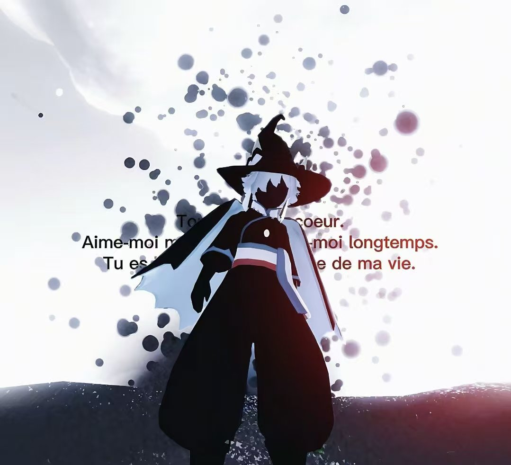

虐恋
须知
PAIN & DEVOTION
written by /
冬因
serial /
NO.01 · A


01
Meet关于我
— BASIC PROFILE —
- 署名
- 冬因
- 属性
- T
- 性别
- 女
- 人格
- INTP
- 火象
- 白羊
- 游戏
- 仅光遇
知道是相爱

02
Predilection加分项
— WHAT WINS ME OVER —
留话口有个人风格
剖析理性 且 有逻辑
微文艺有效话术
如果流水有声音
你听到的是结束还是开始

03
Abhor负分项
— INSTANT DEAL-BREAKERS —
套公式 / 逻辑混乱
没自信 / 胡言乱语
打字慢 / 错别字多
大众雷 / 浪费时间
你存在的意义只是作为我的镜子
I'm like a child. I don't change my nature and play tricks on you.
I'll talk about it and push you away.
I want to prove that I am still favoured by you.
But you follow the situation and retreat to the sea of people.
I deserve it. I admit it.
I'll talk about it and push you away.
I want to prove that I am still favoured by you.
But you follow the situation and retreat to the sea of people.
I deserve it. I admit it.

冬因YE
点 击 照 片 · 显 现
病恋须知 ↗